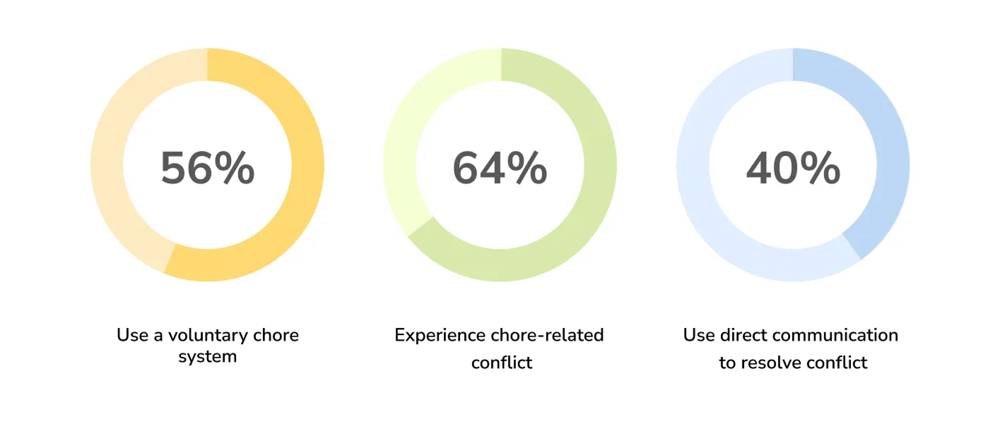

01 - User Research
Identifying the challenge
Living with others is difficult. Whether you are a student living with friends or parents raising kids, chores need to get done one way or another. Many factors including physical ability, schedules, age, and more influence how a household distributes tasks. Oftentimes, verbal agreements are forgotten and people end up feeling conflicted and frustrated.
How might we improve the experience of getting household chores done when living with multiple people?
User Surveys
Our survey asked open-ended and closed-ended questions to identify the types of chore distribution systems used, how people keep track of complete or incomplete chores, and how they resolve chore-related conflicts if any.
User Interviews
We conducted interviews with college students, ages 18-22 and living with housemates, to ask more case-specific questions based on their survey responses
"My housemates can get very passive-aggressive… I usually have to nag them to get chores done properly and on time but I hate confrontation."
"We use a whiteboard to keep track of chores that have or haven't been done…"
"We try to compromise when we face conflict… but sometimes, it feels unfair."
02 - Synthesis & Ideation
Affinity Mapping
After concluding our research, we moved on to synthesizing our data using affinity mapping. We identified and categorized the pain points and recurring patterns, using them as inspiration while ideating our core designs. We narrowed our research down to 3 key themes:
Communication: Most people avoid confrontation to maintain positive housemate relationships, but for those who do, they prefer direct communication via text or in-person discussions.
Organization: Given that different households have different dynamics, most people also have different systems for keeping track of chore responsibilities.
Accountability: Most people rely on the “honor” system or word of mouth to keep track of finished/unfinished chores but some also use diagrams and other tools to create a housemate accountability system.
03 - Design
Coming up with possible solutions
Using those three themes as inspiration, we independently sketched several possible solutions. Here are some of the common features we found among our sketches:
Incentives: Making chores a fun, interactive activity through score-based games, customizable avatars, or competitive activities
Communication: Prioritizing anonymity to reduce housemate bias. Communication ideas include requesting chores to be done, chore swapping, nudging housemates to stay on task, or image-based communication
Dashboard: Centralize user and housemate's chores, scores, notifications, and general communication
Settings: Allow users to control chore cycles, adjust chore lists, and add teams
04 - Final Designs
Introducing Chroll - a gamified, incentive-driven app that keeps housemates on top of their chores! In a race against time and each other, users must finish their chores to earn bubble points and win first place on the leaderboard. Through customizable troll avatars and anonymous communication tools, Chroll aims to reduce passive-aggressive tendencies and increase accountability among housemates.
Onboarding
After creating an account, onboarding provides new users with a product tour of Chroll's key features- communication tools like Redo Request, Chrolling, and Bubble Points. Users can then select their troll avatar before proceeding to their personal dashboard. Through the dashboard, users can create a new group, join an existing one, or accept a group invitation.

Chore Claim
Through the chore claim, users of the same group can compete to select chores. The number of chores are evenly divided among users so if a chore is already claimed, users are given a chance to select from the list again!

Chrolling
In order to decrease passive-aggressiveness between housemates, we designed Chrolling! Similar to Facebook's Poke feature, Chrolling a user sends an anonymous reminder to complete chores before the chore cycle ends.

Shopping
Using Bubble Points earned by completing chores, users can shop for accessories, colors, and clothes to further customize their troll companions!

Request Redo
Anonymously request chores to be redone! Users can send a Redo Request if a chore needs to be repeated or hasn't been carried out properly.

Leaderboard & Cycle Settings
Users can compete to be recognized as the first housemate to finish their chores in a cycle. The winner of the chore cycle earns bragging rights and a place on the app leaderboard!
The settings page allows the whole group to adjust the length and frequency of their chore cycle, and request to add or delete chores. Members of the group must vote to decide if these changes are implemented.

Reflection
By the end of the 6 weeks, I learned that the design process isn't as simple as following the main phases. Instead, it is filled with cycles of different iterations, new challenges, and compromise! Learning how to openly communicate and defend my design decisions was a skill I cultivated over the course of many late nights filled with design debates. Overall, I enjoyed the challenge of designing an app from scratch to solve a problem.